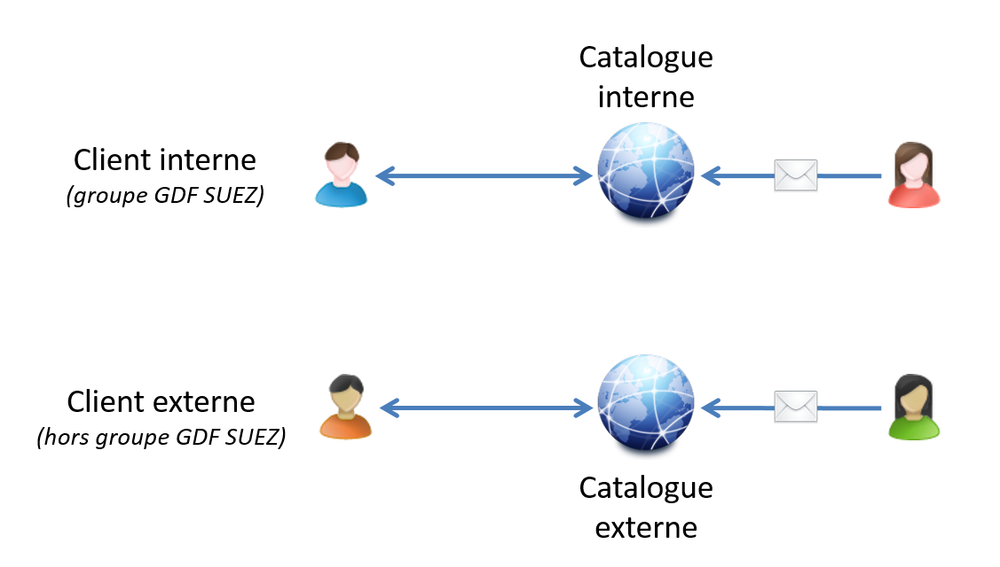
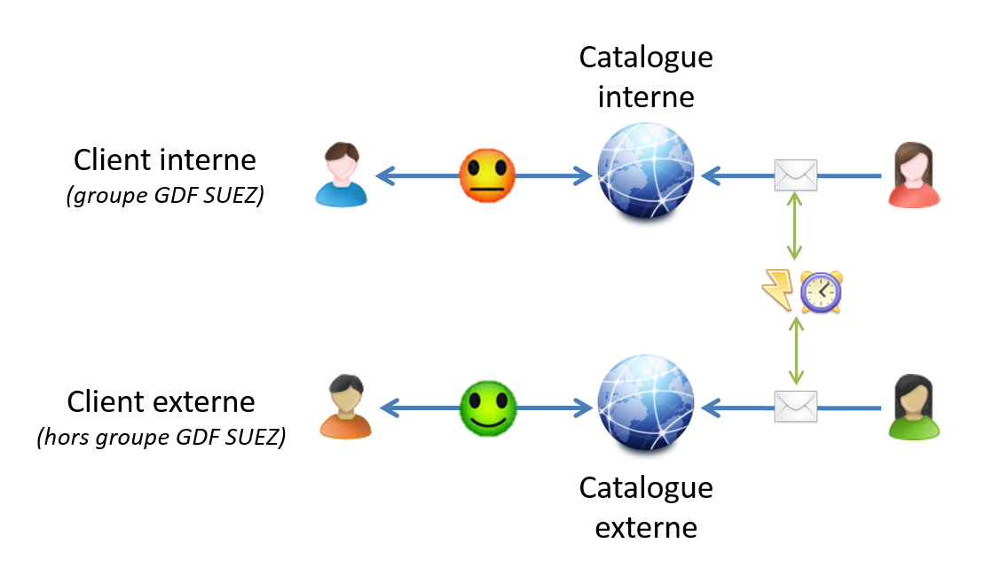

<!doctype html>
<html lang="en">

<head>
<meta charset="utf-8">

<title>Soutenance - Maxence POUTORD</title>

<meta name="apple-mobile-web-app-capable" content="yes" />
<meta name="apple-mobile-web-app-status-bar-style" content="black-translucent" />

<meta name="viewport" content="width=device-width, initial-scale=1.0, maximum-scale=1.0, user-scalable=no, minimal-ui">

<link rel="stylesheet" href="plugin/font-awesome/css/font-awesome.min.css">
<link rel="stylesheet" href="css/reveal.css">
<link rel="stylesheet" href = "http://slidifylibraries2.googlecode.com/git/inst/libraries/widgets/bootstrap/css/bootstrap.css">
<link rel="stylesheet" href="css/theme/solarized.css" id="theme">

<!-- Code syntax highlighting -->
<link rel="stylesheet" href="lib/css/zenburn.css">
<link rel="stylesheet" href="css/styles.css">
<!-- Printing and PDF exports -->
<script>
var link  = document.createElement( 'link' );
link.rel  = 'stylesheet';
link.type = 'text/css';
link.href = window.location.search.match( /print-pdf/gi ) ? 'css/print/pdf.css' : 'css/print/paper.css';
document.getElementsByTagName( 'head' )[0].appendChild( link );
</script>

<!--[if lt IE 9]>
<script src="lib/js/html5shiv.js"></script>
<![endif]-->
</head>

<body>

<div class="reveal">

<!-- Any section element inside of this container is displayed as a slide -->
<div class="slides">
<section>
	<section>
		<h2 class="top-2">Soutenance<br>Titre : Architecte Logiciel</h2>
		<p>Maxence POUTORD</p>
		<p>29/10/2015</p>
	</section>
</section>

<section>
	<section>
		<h2>Contexte</h2>
		<div>
			
			
			
			
		</div>
		<aside class="notes">
			Energy Formation : 2 SI totalement différents
			<li>techno Microsoft // PHP</li>
			<li>géré par prestataires différents</li>
			Palier les problèmes qui émanent de l’état actuel du S.I. :
			<li>Recopie d’info et info pas toujours identiques…</li>
			<li>Catalogue interne peu convivial</li>
		</aside>
	</section>
	<section>
		<h2>Objectif de l'application</h2>
		
		<aside class="notes">
			fiche = module de formation
		</aside>
	</section>
	<section>
		<h2 class="top-1">Workflows</h2>
		
		<aside class="notes">
			Application au coeurs du SI <br>
			Je dois consommer et fournir des services web
		</aside>
	</section>
	<section>
		<h2 class="top-3">Problématique</h2>
		<blockquote style="width: 100%; box-shadow: none;">
&ldquo;Enjeux d’une architecture orientée services <br>dans le cadre du développement d’une application web&rdquo;
		</blockquote>
	</section>
	<section>
		<h2>Plan</h2>
		<ul style="list-style-type: none; padding-left: 0px;">
			<li>Introduction</li>
			<li><span style="float:left; width: 41px;">I</span> &mdash; Présentation de l'application</li>
			<li><span style="float:left; width: 41px;">II</span> &mdash; Consommer des services</li>
			<li><span style="float:left; width: 41px;">III</span> &mdash; Exposer des services</li>
			<li>Conclusion et échanges</li>
		</ul>
	</section>
	<section>
		<h2>Définition</h2>
		
		
	</section>
</section>

<section>
	<section>
		<h2 class="top-3">I &mdash; Présentation de l'application</h2>
	</section>
	<section>
		<h2>Utiliser un framework JavaScript ?</h2>
		<div class="fragment push" data-fragment-index="0">
			
		</div>
		<div class="fragment push" data-fragment-index="1">
			
			<div class="alert alert-danger" role="alert">
				
				Internet Explorer 7
			</div>
		</div>
		<div class="fragment push" data-fragment-index="2">
			
		</div>
		<aside class="notes">
			carte blanche sur technologies
		</aside>
	</section>
	<section>
		<h2>Symfony2</h2>
		<div class='span4'>
			
		</div>
		<div class='span8'>
			<ul class="unstyled">
				<li>Framework MVC PHP</li>
				<li>Critères de choix :</li>
				<ul>
					<li>Popularité/Communauté</li>
					<li>Sécurité</li>
					<li>Documentation</li>
				</ul>
				<li>Approche en tout module (Bundle)</li>
				<li>Outils de génération de code</li>
			</ul>
		</div>
		<aside class="notes">
			Benchmark <br>
			génération de code : se concentrer sur l'essentiel
		</aside>
	</section>
	<section>
		<h2>Fonctionnement des services sous Symfony2</h2>
		<div class='span8'>
			<ul>
				<li class="fragment" data-fragment-index="0">Fonctionnalité qui effectue une tâche <em>globale</em></li>
				<li class="fragment" data-fragment-index="2">Fonctionne grace au mécanisme d’injection de dépendances <br>
				<i class="fa fa-long-arrow-right"></i> Instanciation lors de l'appel du service (<em>Principe d’Hollywood</em>)</li>
			</ul>
		</div>
		<div class='span4 fragment' data-fragment-index="1">
			
		</div>
		<aside class="notes">
			injection de dépendances:Là-dessus que repose la majeure partie des nouveaux frameworks <br>
			Mêmes perf pour 1 ou 1000 services <b>inactifs</b>
		</aside>
	</section>
</section>

<section>
	<section>
		<h2 class="top-3">II &mdash; Consommer des services</h2>
	</section>
	<section>
		<h2>Protocole SOAP</h2>
		<div class='span6'>
			<ul>
				<li><em>Simple Object Access Protocol</em></li>
				<li>Protocole qui permet l’échange de données entre deux applications distantes</li>
				<li>Données au format XML</li>
			</ul>
		</div>
		<div class='span6'>
			
		</div>
	</section>
	<section>
		<h2>Problèmes rencontrés</h2>
		<ul>
			<li>Services web génériques et peu adaptés à l'utilisation souhaitée</li>
			<b class="fragment ko"><i class="fa fa-times"></i> Impossibilité d'en créer des spécifiques</b>
			<li class="respire-top">Requêtes lourdes</li>
			<b class="fragment ok"><i class="fa fa-check"></i> Penser l'architecture autrement</b>
			<li class="respire-top">Peu de documentation</li>
			<b class="fragment ok"><i class="fa fa-check"></i> Documenter les services utilisés</b>
			<li class="respire-top">Centraliser toutes les fonctions des services web</li>
			<b class="fragment ok"><i class="fa fa-check"></i> Créer un service Symfony2</b>
		</ul>
		<aside class="notes">
			2: mes données font foi
		</aside>
	</section>
	<section>
		<h2>Création d’un service Symfony2</h2>
		<div class='span6'>
			<ul>
				<li>Eviter la duplication de code</li>
				<li>Utilisation de web services transparente dans le code d’un contrôleur</li>
				<ul>
					<li>Propreté du code</li>
					<li>Maintenabilité</li>
				</ul>
			</ul>
		</div>
		<div class='span6'>
			
		</div>
		<aside class="notes">
			Permet de pas alourdir le code. 100 lignes/fonction
		</aside>
	</section>
</section>

<section>
	<section>
		<h2 class="top-3">III &mdash; Exposer des services</h2>
	</section>
	<aside class="notes">
	</aside>
	<section>
		<h2>REST et le modèle de maturité de Richardson</h2>
		
		<div class="fragment push" data-fragment-index="1">
			<h3>&mdash; Niveau 0 : &#8220;Bon vieux XML&#8221; &mdash;</h3>
			<ul>
				<li>HTTP tunnelise les requêtes</li>
				<li>Requêtes de type POST uniquement</li>
				<li>Un seul point d'entrée : <br>
				<em>http://application.fr/api/stages</em> (gérera tous les stages)</li>
				<li><em>Exemple : SOAP et XML-RPC</em></li>
			</ul>
		</div>
		<div class="fragment push" data-fragment-index="2">
			<h3>&mdash; Niveau 1 : Ressources &mdash;</h3>
			<ul>
				<li>Apparition de la notion de ressources</li>
				<li>Exemple :</li>
				<ul>
					<li><em>http://application.fr/api/stages/Z700</em></li>
					<li><em>http://application.fr/api/stages/Z700/sessions/1001</em></li>
				</ul>
			</ul>
		</div>
		<div class="fragment push" data-fragment-index="3">
			<h3>&mdash; Niveau 2 : Verbes HTTP &mdash;</h3>
			<ul>
				<li>Utilisation des verbes HTTP<br>
					<em>Exemple : GET, POST, PUT et DELETE...</em>
				</li>
				<li>Utilisation des Codes HTTP<br>
					<em>Exemple : 200, 201, 403, 404, 500, ...</em>
				</li>
			</ul>
		</div>
		<div class="fragment push" data-fragment-index="4">
			<h3>&mdash; Niveau 3 : HATEOAS (contrôles hypermédias) &mdash;</h3>
			<ul>
				<li><em>Hypertext As The Engine Of The Application State</em></li>
				<li>Précondition à REST</li>
			</ul>
		</div>
		<aside class="notes">
			Pour passer au niveau suivant, il faut respecter les niveaux précédents<br>
			etape 2: bof car REST devrait être agnostique du protocole<br>
			Méthodes : PATCH, HEAD... <br>
			Roy T. Fielding
		</aside>
	</section>
	<section>
		<h2>HATEOAS (1/2)</h2>
<pre><code>
&lt;stage id="42"&gt;
  &lt;code&gt;Z700&lt;/code&gt;
  &lt;libelle&gt;L'essentiel sur l'énergie Gaz&lt;/libelle&gt;
  &lt;sessions&gt;
    &lt;session id="1001"&gt;
      &lt;date-debut&gt;14-12-2015&lt;/date-debut&gt;
      &lt;places-disponibles&gt;5&lt;/places-disponibles&gt;
    &lt;/session&gt;
    &lt;session id="1024"&gt;
      &lt;date-debut&gt;18-01-2016&lt;/date-debut&gt;
      &lt;places-disponibles&gt;0&lt;/places-disponibles&gt;
    &lt;/session&gt;
  &lt;/sessions&gt;
&lt;/stage&gt;
</code></pre>
	</section>
	<section>
		<h2>HATEOAS (2/2)</h2>
<pre style="width: 117%;"><code style="max-height: none;">
&lt;stage id="42"&gt;
  &lt;code&gt;Z700&lt;/code&gt;
  &lt;libelle&gt;L'essentiel sur l'énergie Gaz&lt;/libelle&gt;
  &lt;sessions&gt;
    &lt;session id="1001"&gt;
      &lt;date-debut&gt;14-12-2015&lt;/date-debut&gt;
      &lt;places-disponibles&gt;5&lt;/places-disponibles&gt;
      &lt;link rel="details"     href="http://application.fr/api/stages/Z700/sessions/1001/details" /&gt;
      &lt;link rel="inscription" href="http://application.fr/api/stages/Z700/sessions/1001/inscription" /&gt;
    &lt;/session&gt;
    &lt;session id="1024"&gt;
      &lt;date-debut&gt;18-01-2016&lt;/date-debut&gt;
      &lt;places-disponibles&gt;0&lt;/places-disponibles&gt;
      &lt;link rel="details"     href="http://application.fr/api/stages/Z700/sessions/1024/details" /&gt;
    &lt;/session&gt;
  &lt;/sessions&gt;
  &lt;links&gt;
    &lt;link rel="self"  href="http://application.fr/api/stages/Z700" /&gt;
    &lt;link rel="fiche" href="http://application.fr/api/stages/Z700/fiche" /&gt;
  &lt;/links&gt;
&lt;/stage&gt;
		</code></pre>
	</section>

	<section>
		<h2>Exposer ses données</h2>
		<ul>
			<li>Des bundles permettent de sérialiser des objets</li>
			<li>Comment aggréger des objets ?<br>
				Exemple : <em>si l'objet dispose de données sensibles...</em></li>
		</ul>
	</section>
	<section>
		<h2>Le pattern d’objets de transfert de données (DTO)</h2>
		
	</section>
	<aside class="notes">
		Merci Martin Fowler
	</aside>
</section>

<section>
	<section>
		<h2 class="top-3">Conclusion</h2>
		<blockquote style="margin-top: 50px; width: 80%;">
			Les architectures orientées services permettent aux applications de se recentrer sur leur cœur de métier.
		</blockquote>
		<aside class="notes">
			FINI les applications qui font tout <br>
			REST plus adapté au web.
		</aside>
	</section>
	<section>
		<h2>Gains</h2>
		<ul>
			<li>Clients :</li>
			<ul>
				<li>L'application répond mieux à leurs besoins</li>
				<li>Amélioration de l'expérience utilisateur</li>
				<li>Site web adaptatif <em>(responsive web design)</em></li>
			</ul>
			<br>
			<li>Entreprise :</li>
			<ul>
				<li>Gain de temps pour la mise à jour des données</li>
				<li>SI monolithique <i class="fa fa-long-arrow-right"></i> SI plus communicatif</li>
				<li>Fonctionnalités accrues (mesure d’audience web, base de données accessible...)</li>
				</ul>
			</ul>
		</ul>
		<aside class="notes">
			SI + communicatif malgré l'entropie des technologies
		</aside>
	</section>
	<section>
		<h2>Apprentissages</h2>
		<ul>
			<li>Ne pas réinventer la roue avec le principe de bundle de Symfony2</li>
			<li>Consommer, exposer et documenter des services web</li>
			<li>Être pragmatique</li>
			<li>Fierté d'avoir mené ce projet de A <i class="fa fa-long-arrow-right"></i> Z<br>... même si cela n'a pas été facile tous les jours !</li>
			<li>Satisfaction que l'application continue de servir</li>
		</ul>
		<aside class="notes">
			servir aux clients + personnel d'Energy Formation
		</aside>
	</section>
</section>

<section>
	<section>
		<h2 class="top-1">Échanges</h2>
		
		<aside class="notes">
			Merci pour votre attention <br> dispo pour remarques + questions
		</aside>
	</section>
</section>


</div>

</div>

<script src="lib/js/head.min.js"></script>
<script src="js/reveal.js"></script>

<script>

// Full list of configuration options available at:
// https://github.com/hakimel/reveal.js#configuration
Reveal.initialize({
	controls: true,
	progress: true,
	slideNumber: true,
	history: true,
	center: false,
	width: 1000,
	height: 700,

	transition: 'convex', // none/fade/slide/convex/concave/zoom

// Optional reveal.js plugins
dependencies: [
	{ src: 'lib/js/classList.js', condition: function() { return !document.body.classList; } },
	{ src: 'plugin/markdown/marked.js', condition: function() { return !!document.querySelector( '[data-markdown]' ); } },
	{ src: 'plugin/markdown/markdown.js', condition: function() { return !!document.querySelector( '[data-markdown]' ); } },
	{ src: 'plugin/highlight/highlight.js', async: true, condition: function() { return !!document.querySelector( 'pre code' ); }, callback: function() { hljs.initHighlightingOnLoad(); } },
	{ src: 'plugin/zoom-js/zoom.js', async: true },
	{ src: 'plugin/notes/notes.js', async: true }
]
});

</script>

</body>
</html>
